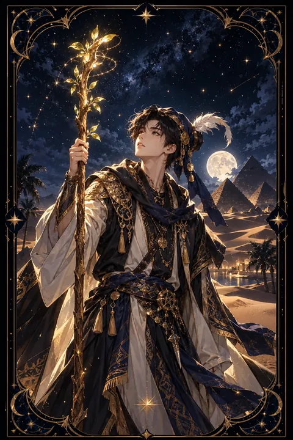

완드 시종 카드 — 호기심이 틔우는 새 불씨
완드 시종 카드 한눈에 보기
완드 시종 카드 상징 읽기

동네보살의 카드 그림은 전통 라이더–웨이트 덱의 뜻을 새 그림으로 옮긴 것입니다. 아래 상징 설명은 전통 덱의 그림을 기준으로 합니다.
완드 시종은 붉은 깃털이 달린 모자를 쓴 젊은이가 자기 키보다 큰 지팡이를 세워 들고 그 끝을 바라보는 모습입니다. 지팡이 끝에 돋은 초록 싹은 이제 막 움트기 시작한 아이디어와 가능성을 뜻합니다.
시종의 옷에 새겨진 도롱뇽 무늬는 불의 원소를 상징합니다. 전설 속 도롱뇽은 불 속에서도 타지 않는 생물로 여겨졌기에 열정과 생명력, 변화에도 꺾이지 않는 의지를 나타냅니다.
뒤편에 펼쳐진 사막과 피라미드는 아직 가 보지 않은 먼 땅과 탐험의 세계를 가리킵니다. 메마른 땅 위에 서 있으면서도 손에 든 지팡이에는 싹이 돋아 있다는 점이 인상적입니다. 환경이 척박해도 호기심과 열정만 있다면 새로운 것을 키워 낼 수 있다는 메시지입니다. 시종이라는 신분은 배우는 단계에 있는 사람을 뜻하며 전령처럼 새 소식을 전하는 역할도 겸합니다.
완드 시종 카드 정방향 뜻
정방향 완드 시종은 새로운 일을 향한 설렘과 호기심이 피어나는 시기를 알립니다. 아직 경험은 부족하지만 배우고 싶은 마음과 해 보고 싶은 의욕이 그 빈자리를 채워 줍니다.
이 카드는 좋은 소식이나 제안이 도착한다는 의미로도 자주 읽힙니다. 새로운 수업, 여행, 취미, 일자리처럼 삶에 활기를 더해 줄 기회가 가까이 와 있습니다. 머릿속에 번뜩 떠오른 아이디어가 있다면 가볍게라도 기록해 두세요.
완벽한 준비를 기다리기보다 작은 시도부터 해 보는 것이 이 카드의 조언입니다. 처음이라 서툰 것은 당연하며 그 서툼이야말로 성장의 출발점입니다. 궁금한 것은 망설임 없이 묻는 태도를 유지하면 불씨는 곧 큰 불로 자라납니다. 호기심은 나이와 상관없이 누구에게나 찾아오는 선물이니 오늘 떠오른 질문 하나를 끝까지 따라가 보세요.
완드 시종 카드 역방향 뜻
역방향 완드 시종은 의욕은 넘치지만 방향을 잡지 못한 상태를 보여 줍니다. 여러 가지 일에 관심을 두고 시작했다가 금세 흥미를 잃어 끝을 맺지 못하는 일이 반복될 수 있습니다.
들뜬 마음에 계획을 떠벌리거나 준비 없이 뛰어들었다가 곤란해지는 경우도 있습니다. 기다리던 소식이 늦어지거나 기대했던 기회가 흐지부지되어 실망감이 들 수도 있습니다.
그렇다고 열정이 사라진 것은 아닙니다. 관심사를 하나로 좁히고 작은 목표를 세워 꾸준히 이어 가는 연습이 필요합니다. 새로운 것을 계속 찾기보다 이미 시작한 것 가운데 가장 마음이 가는 한 가지를 끝까지 해 보세요. 한 번의 완성 경험이 흩어진 호기심을 단단한 실력으로 바꿔 줍니다. 흥미가 식었다고 자책하기보다 무엇이 재미를 앗아 갔는지 살펴보면 다음 시작이 훨씬 단단해집니다.
연애에서 완드 시종 카드
솔로라면 풋풋하고 설레는 만남이 찾아올 수 있는 시기입니다. 새로운 모임이나 취미 활동에서 호감 가는 사람을 만나기 쉽고 가벼운 연락이 즐거운 인연으로 이어질 수 있습니다. 너무 재지 말고 호기심이 이끄는 대로 말을 걸어 보세요.
이미 곁에 연인이 있다면 관계에 신선한 활력을 불어넣을 때입니다. 둘 다 가 본 적 없는 동네를 함께 걸어 보거나 처음 해 보는 체험을 나란히 즐기면 풋풋했던 시절의 두근거림이 다시 찾아옵니다. 깜짝 연락이나 작은 선물도 좋은 반응을 얻습니다.
다만 이 카드의 사랑은 아직 무르익지 않은 단계일 수 있습니다. 상대의 가벼운 호감을 깊은 약속으로 받아들이기보다 천천히 알아 가는 즐거움을 누리는 편이 좋습니다. 기대를 조금 내려놓으면 오히려 관계가 자연스럽게 자랍니다.
재회·속마음 질문에서 완드 시종 카드
완드 시종이 재회 질문에 등장하면 상대에게서 가벼운 연락이나 소식이 올 수 있다는 신호입니다. 안부 인사나 사소한 메시지처럼 부담 없는 형태일 가능성이 큽니다. 이때 지난 일을 무겁게 꺼내기보다 새로 알게 된 사람처럼 가볍고 밝게 대화를 이어 가면 흐름이 부드러워집니다. 다만 상대의 호기심이 곧바로 진지한 마음으로 이어진다고 단정하기는 이릅니다. 시종이 거꾸로 서 있다면 상대의 마음이 자주 바뀌거나 말만 앞설 수 있으니 행동으로 보여 주는 변화를 지켜본 뒤 판단하세요. 어느 쪽이든 첫 연락에 모든 것을 걸기보다 가벼운 대화를 몇 번 이어 가며 서로의 달라진 모습을 확인하는 과정이 필요합니다.
일·금전에서 완드 시종 카드
일에서는 새로운 프로젝트나 교육, 신입 업무처럼 배우며 성장하는 기회가 찾아옵니다. 참신한 아이디어가 주목받기 쉬운 시기이니 떠오른 생각을 메모해 두었다가 적절한 때에 제안해 보세요. 이직이나 새로운 분야 도전을 알아보기에도 알맞은 때입니다.
수입 쪽으로는 작은 부업이나 재능을 활용한 수입 아이디어가 떠오를 수 있습니다. 처음부터 큰돈을 들이기보다 적은 비용으로 먼저 시험해 보는 편이 안전합니다. 새로운 취미를 시작할 때도 장비부터 사들이기보다 체험을 먼저 해 보면 충동적인 지출을 줄일 수 있습니다. 배움에 쓰는 비용은 당장은 지출이지만 머지않아 실력이라는 형태로 돌아옵니다.
완드 시종 카드는 예일까 아니오일까
새로운 시작과 반가운 소식을 알리는 카드라서 가볍게 시도해 보라는 쪽, 곧 예에 가깝습니다. 거꾸로 나왔다면 의욕에 비해 준비가 부족하다는 뜻이어서 계획을 조금 더 다듬은 뒤 움직이는 조건이 붙습니다.
자주 묻는 질문
완드 시종 카드 역방향은 나쁜 뜻인가요?
역방향 완드 시종은 의욕은 넘치지만 방향을 잡지 못한 상태를 보여 줍니다. 여러 가지 일에 관심을 두고 시작했다가 금세 흥미를 잃어 끝을 맺지 못하는 일이 반복될 수 있습니다.
완드 시종 카드가 연애 질문에 나오면요?
솔로라면 풋풋하고 설레는 만남이 찾아올 수 있는 시기입니다. 새로운 모임이나 취미 활동에서 호감 가는 사람을 만나기 쉽고 가벼운 연락이 즐거운 인연으로 이어질 수 있습니다. 너무 재지 말고 호기심이 이끄는 대로 말을 걸어 보세요.
타로 카드는 어떻게 뽑나요?
타로 카드 페이지에서 78장을 섞으면 그중 22장이 펼쳐집니다. 마음이 가는 세 장을 고르면 과거·현재·미래 자리에 놓이고, 한 장씩 뒤집어 자리와 방향에 맞는 풀이를 읽습니다. 정방향과 역방향은 섞는 순간 정해집니다.